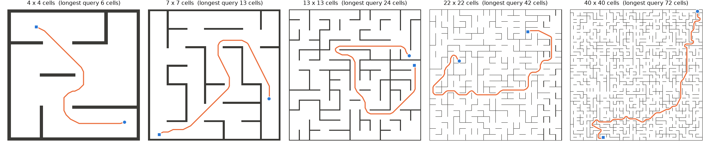
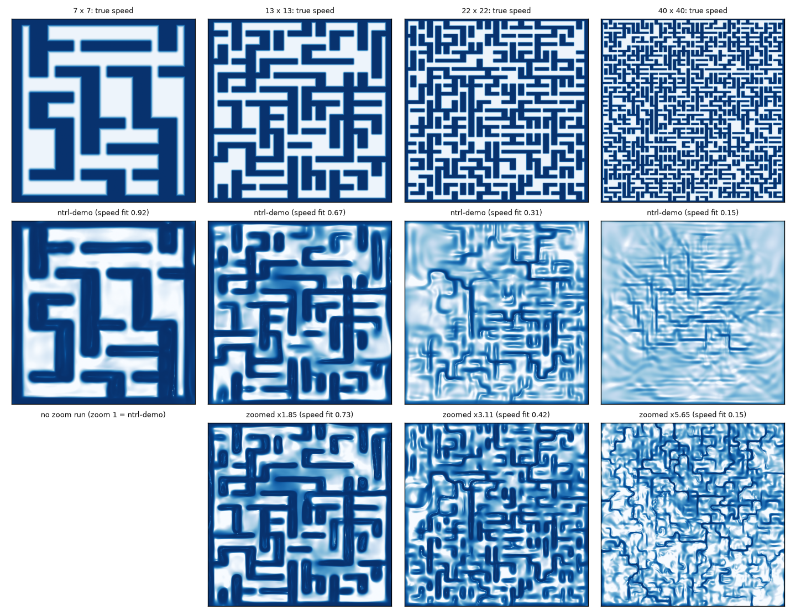
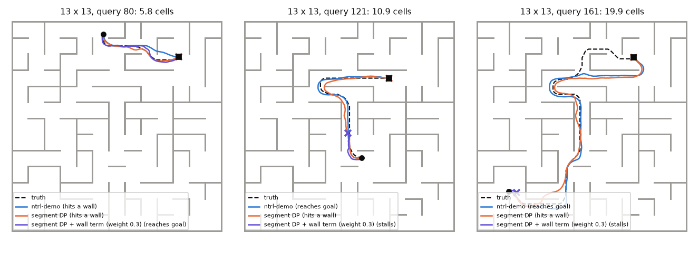

ntrl-demo plans flawlessly on mazes up to the size of its own demo maze (7 × 7 cells) and falls apart beyond it: 99.7 % of runs on 4×4 and 7×7, 59 % on 13×13, 23 % on 22×22 and 11 % on 40×40, where it does no better than driving straight at the goal. It fails by hitting walls: as the maze grows, the walls fade out of its travel-time field. Segment DP alone repairs the long-range travel times but plans worse. With ntrl-demo’s own wall term in every DP level it beats ntrl-demo at every distance on 13×13 (74 vs 59 %) and doubles it on 22×22 (43 vs 21 %); on 40×40 nothing tested gets past 8 cells.
Perfect mazes (randomized Kruskal) with 15 % of the remaining walls removed to open loops, like ntrl-demo’s demo maze, at 4, 7, 13, 22 and 40 cells a side; the last is 10× the first in each direction. Each is an .obj normalized exactly as ntrl-demo’s to_off does. The robot is a 0.5 × 0.2-cell rectangle planned in SE(2) as q = (x, y, φ) with φ = 0.25 θ in cell units: it can turn on a corridor’s centre line but drives slowly broadside. Margin, planner step, tolerance and temperature are all set in cells, so only the number of cells changes between mazes.

Queries are binned by their true travel distance (cells at full speed, from a ground-truth grid solver), 40 per bin, each certified by a collision-free truth path. Each point pools 3 training seeds × 3 planning seeds; the whisker is the training-seed range. The oracle, the same MPPI driven by the true travel time, solves every query, so every loss is the learned field’s. Hover a panel for the numbers.
At 7×7 the learned speed redraws every wall. At 13×13 most walls survive, at 22×22 only a connected subset, at 40×40 almost none. On held-out pairs the learned speed’s log-correlation with the true speed falls 0.96, 0.92, 0.69, 0.32, 0.16 from 4 to 40 cells. At poses next to a wall the field’s rise into the wall (ntrl-demo’s eikonal target is 1) falls from 0.84–0.89 to 0.20, and its pull away from the wall (cosine with the into-wall direction, target 1) from 0.98 to 0.07–0.10. On the 40×40 maze MPPI hits the first wall it meets, a median 0.4–0.8 cells after the start.

Control: zoomed input. Training ntrl-demo on coordinates scaled so one cell spans the same input length as in the 7×7 maze (the same as multiplying its Fourier matrix B by 1.85, 3.11 or 5.65) recovers a lot at 13×13 (444 vs 347 of 600 runs for the same training seed) and some at 22×22 (213 vs 152 of 720), but not at 40×40 (108 vs 89 of 840; speed fit still 0.15). Input frequency per cell explains part of the loss at 13 and 22 cells; at 40 cells one network does not hold about 1,400 walls even at the right frequency.
Segment DP (the interval-DP transition of jeffrey/segment_dp) builds travel times for long gaps from shorter ones: T(i, j) = mink T(i, k) + T(k, j) over pool poses k within the shorter segments’ range. Gaps are cut geometrically from 0.5 cells (ntrl-demo’s own field below) to the maze diameter, 8 to 16 levels, each a warm-started ntrl-demo network fit to its DP targets. The chain fixes the long-range values (13×13, 16–32 cells: 1.35 × the true travel time vs 2.04) and directions, yet plans worse on every maze ntrl-demo had not already solved. The levels are fit to values only, so they lose the wall barrier that ntrl-demo’s near-wall terms give its own field (near-wall table below), and MPPI collides sooner.
Excluding through-wall base pieces from the DP (checked pieces) or starting from the zoomed field does not change this. Fitting ntrl-demo’s own wall-direction term in every DP level (segdp3.py) brings the barrier back (near-wall table above), and the chains stop hitting walls; what still fails stalls in a local minimum of the long-range field (crosses in the figure). The term’s weight matters. At weight 1 the long-range values drift low and long queries stall; at weight 0.3 the chain beats ntrl-demo on all three 13×13 training seeds (451 / 456 / 420 vs 347 / 320 / 393 of 600 runs), at every distance including the longest (16–32 cells: 32 / 51 / 29 vs 32 / 4 / 34 of 120), doubles it on 22×22 (308 vs 152 of 720) and helps on 40×40 below 8 cells (155 vs 89 of 840). Where ntrl-demo is already perfect (7×7) the chain costs a little (454 vs 480).

models/metric Model.train() unchanged, dim 3, 5,000 epochs, training seeds 87358 / 1 / 2.